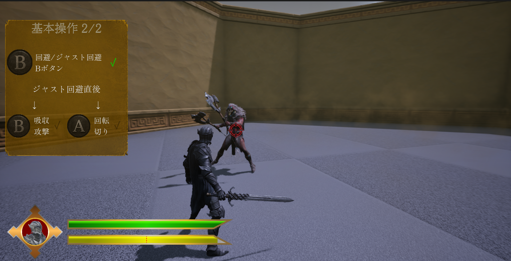
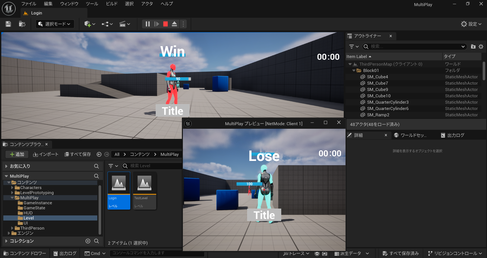
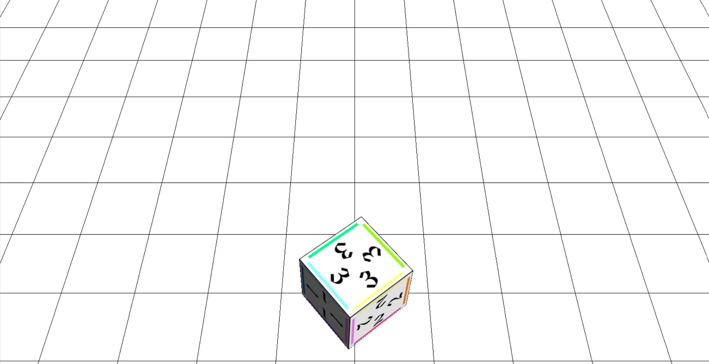

Knight of Ruins 
UE5 / C++・チーム開発
ゲーム業界の展示イベント出展を目標に、仲間3名と開発したアクションゲーム。チュートリアルの説明するUIと雑魚敵AI全般、Niagaraによる撃破演出などを担当しました。
国際電子ビジネス専門学校 3年 — 就職活動用ポートフォリオ
Game Programmer / Unreal Engine 5 × C++
自分で多くを考えて動かすゲームが好きで、Overwatch、ストリートファイター6、デュエル・マスターズをよく遊んでいます。TYPE-MOON作品もよく遊んでおり、「月姫」「魔法使いの夜」「FGO」の中でも、「魔法使いの夜」はストーリーも登場人物も一番好きです。
ゲーム業界に貢献できるプログラマーを目指し、Unreal Engine 5（C++ / Blueprint）でのゲーム開発を中心に学んできました。チーム開発でのマルチプレイヤー実装から、OpenGL/GLUTを使った低レイヤーな描画・物理シミュレーションまで、幅広く技術を積み重ねています。現在はUnityも勉強しています。
作品を見る
ゲーム業界の展示イベント出展を目標に、仲間3名と開発したアクションゲーム。チュートリアルの説明するUIと雑魚敵AI全般、Niagaraによる撃破演出などを担当しました。

ローカル2人プレイとオンライン対戦の両立を検証したマルチプレイ基盤。ListenServer/Client構成でのネットワーク同期、Replicated変数とMulticast RPCの使い分けに加え、1台のPCで2人が同時に操作できるよう、サーバー側かクライアント側かの判定に応じてキーボードとゲームパッドの入力を自動で振り分ける仕組みを実装しました。

木や岩を採取ツールで採取しながら道を繋げ、車をゴールまで導くパズルアクションゲーム。チュートリアル全般とステージ説明UI、各マップの初期考案を担当し、文章中心だった説明をアニメーション化することでチュートリアル時間を約半分に短縮しました。

エンジンに頼らず、C++とOpenGL/GLUTで構築した3D描画・物理演習。テクスチャマッピングとクォータニオン回転によるOBJビューア、放物運動シミュレーションを実装し、座標系や描画パイプラインの基礎を固めました。
※ 現在4作品を掲載中。今後も制作物を追加予定です。
自分の書いたコードが、意思を持っているかのようにキャラクターを動かす瞬間に、いちばんのやりがいを感じます。
小学生の頃、ITイベントで体験したゲームをきっかけに、ゲーム制作という仕事に強く惹かれました。専門学校でUnreal Engine 5とC++を学ぶ中で、自分の書いたコードがすぐに動きへと変わる面白さに魅了され、この道を志すようになりました。
直近では「Knight of Ruins」の開発でビヘイビアツリーを用いた雑魚敵AIを担当し、索敵・攻撃・退避といった行動をノードとして分解しながら、状況に応じて自然に切り替わるよう調整を重ねました。プレイヤーが操作しないキャラクターに「意思」を感じさせる難しさとおもしろさを実感し、今後はこの経験を活かして、より説得力のあるキャラクターの振る舞いを作れるプログラマーを目指しています。
学んだことを早いうちから仕事で活かし、少しでも早く任される技術者になりたいです。
将来、様々なプログラミングの知識とノウハウを実務の中で身につけながら、
担当が全く違う人たちと一つのプロジェクトを完成させる経験を積みたいと考えています。
独立や管理よりも、専門学校で学んだことを最大限活かせる専門職として、
現場で手を動かし続けられる技術者でありたいです。
そのために、今後は仕事で使えるプログラミング設計の知識をさらに増やし、
状況に応じて活用法がすぐ思い浮かぶレベルまで身につけていきたいです。
Knight of Ruinsで培った敵AI設計の経験を土台に、より複雑なAIやシステムにも挑戦しながら、
学んだことを腐らせず早く行動できるプログラマーを目指します。